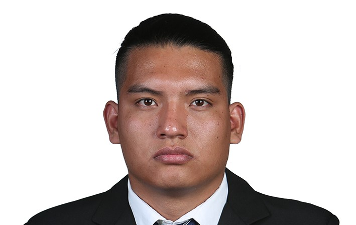
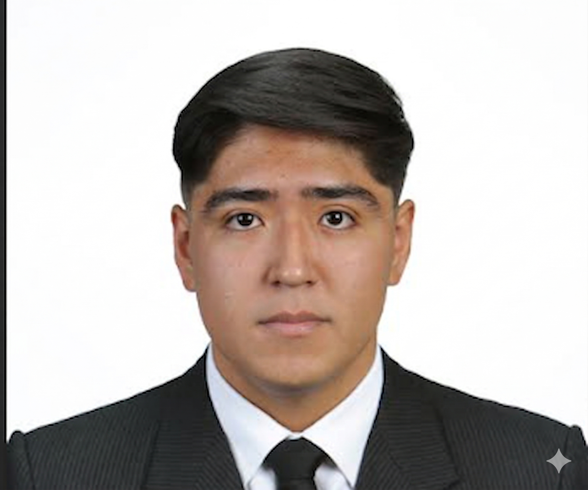

Perfiles del equipo

Joshua Meza Martínez
Técnico Superior Universitario en Desarrollo de Software Multiplataforma
📍 México
📞 (55) 222-678-5940
✉️ chuymezamartinez981@gmail.com
Acerca de mí
Técnico superior en desarrollo de software multiplataforma con habilidades en análisis, diseño e implementación de soluciones tecnológicas. Destaco por mi responsabilidad, aprendizaje continuo y trabajo en equipo.
Objetivo Profesional
Adquirir experiencia práctica en el desarrollo de software mediante la participación en proyectos reales, fortaleciendo mis habilidades y aportando valor a la organización.
Habilidades
Lenguajes: Java, Python, JavaScript
Bases de datos: MySQL, MongoDB
Sistemas: Windows, Linux
Herramientas: HTML, ASP.NET, Front-end
Educación
Universidad Tecnológica de Puebla
TSU en Desarrollo de Software
2023 – 2025
COBAEP Plantel 26
Técnico en Sistemas Computacionales
2018 – 2023
Proyectos
- Mis Manos Hablarán: Plataforma educativa enfocada en accesibilidad e inclusión.
- Sistema de Inventarios: Interfaz web para gestión de productos.
- Sistema de Licitaciones: Visualización de licitaciones públicas.
Idiomas
Español (Nativo) • Inglés (Básico A2)

Leonardo Chavez Romero
TSU Desarrollo de Software Multiplataforma
Ingeniería en Desarrollo y Gestión de Software (En curso)
Universidad Tecnológica de Puebla | 2025 – Actualidad
📞 2223745467
📧 leochavezro17@gmail.com
🐙 github.com/leocharo
Acerca de mí
Soy estudiante de Ingeniería en Desarrollo y Gestión de Software con formación técnica en TSU. Me caracterizo por mi compromiso, capacidad analítica y facilidad para adaptarme a nuevas tecnologías. Busco integrarme en proyectos donde pueda aplicar mis conocimientos y seguir desarrollando mis competencias.
Habilidades Técnicas
Lenguajes: JavaScript, Python, HTML, CSS
Bases de datos: MySQL, MongoDB
Herramientas: Git, Linux
Frameworks: Flutter (Móvil/Web)
Competencias
- Resolución de problemas
- Elaboración de reportes técnicos
- Trabajo en equipo con metodologías ágiles
Objetivo Profesional
Consolidar mi experiencia en el desarrollo de software mediante la participación en proyectos reales, contribuyendo al crecimiento tecnológico y fortaleciendo mis habilidades en entornos colaborativos.
Idiomas
Inglés (Básico A1)

Jesús Rodrigo Romero Gonzalez
Tecnologías de la Información (TSU) | Desarrollo de Software
📞 222 862 2800
📧 jjrockg@hotmail.com
📍 Avenida Ayuntamiento 403, Col. La Libertad
Acerca de mí
Profesional en Tecnologías de la Información con formación en desarrollo de software. Poseo dominio en programación orientada a objetos, desarrollo de aplicaciones de escritorio y manejo de bases de datos. Cuento con certificación Cambridge C2 en inglés, lo que me permite comunicarme de manera efectiva en entornos internacionales. Me caracterizo por aprender rápidamente, resolver problemas de forma estructurada y trabajar con alto compromiso técnico.
Habilidades
- Comunicación asertiva
- Manejo de inventarios y cuentas
- Resolución de problemas
- Uso de herramientas digitales
- Conocimiento de hardware y software
- Programación en C#, HTML5, CSS3
- Bases de datos
- Inglés C2 (Cambridge)
Estudios
Universidad Tecnológica de Puebla
Tecnologías de la Información (En curso)
Harmon Hall
Certificación Cambridge C2
2021 – 2024
Experiencia
- Implementación de lógica empresarial en C# con POO
- Desarrollo de aplicaciones web y de escritorio
- Manejo de redes sociales y campañas digitales
- Resolución de conflictos con clientes y proveedores
- Documentación técnica en inglés profesional
- Desarrollo de sistemas completos (educativos y personales)

Fernando Ulises Cano Cortes
Técnico Superior Universitario en Desarrollo de Software Multiplataforma
📍 Puebla, México
📞 222 931 2660
📧 fcano0505@gmail.com
Perfil Profesional
Estudiante de TSU en Tecnologías de la Información con enfoque en Desarrollo de Software Multiplataforma. Aspiro a desarrollarme como Full-Stack, combinando conocimientos en Python, C# y Flutter con habilidades de comunicación técnica en múltiples idiomas. Cuento con certificación en fundamentos de redes por Cisco y un fuerte compromiso con la innovación y el aprendizaje continuo.
Habilidades Técnicas
Lenguajes: Python, C#, HTML5, CSS3
Desarrollo móvil: Flutter (Dart)
Infraestructura: Redes (Cisco)
Metodologías: Desarrollo ágil
Habilidades Interpersonales
- Comunicación efectiva
- Resolución de problemas
- Trabajo en equipo y adaptabilidad
- Liderazgo y coaching
Idiomas
Español (Nativo) • Francés (B2) • Inglés (B1)
Objetivo Profesional
Contribuir al éxito de proyectos tecnológicos mediante soluciones innovadoras en desarrollo frontend y backend, fortaleciendo continuamente mis competencias técnicas en un entorno profesional.